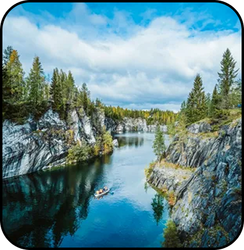
Главная природная достопримечательность, бывший мраморный карьер. Голубые озера в обрамлении белых мраморных скал.
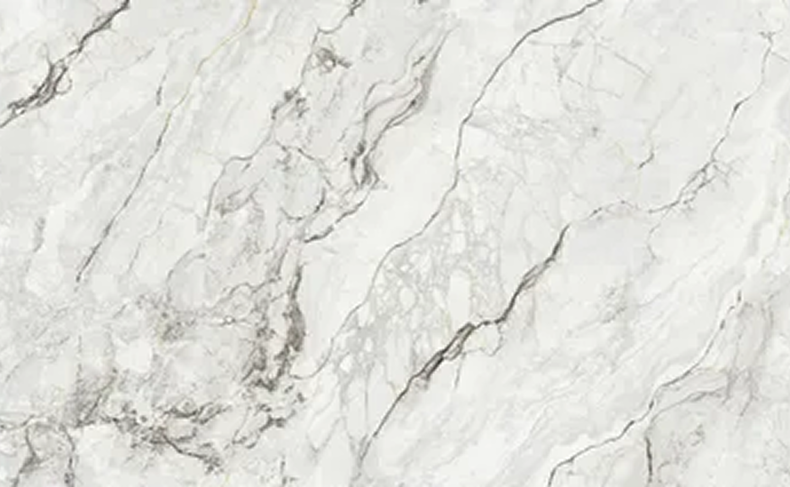
Республика Карелия — это уникальный уголок России, где дикая
природа, древняя история и самобытная культура создают
незабываемую атмосферу путешествия.
Карелия — это место, где хочется остаться подольше. Откройте
для себя суровую и величественную красоту Русского Севера!
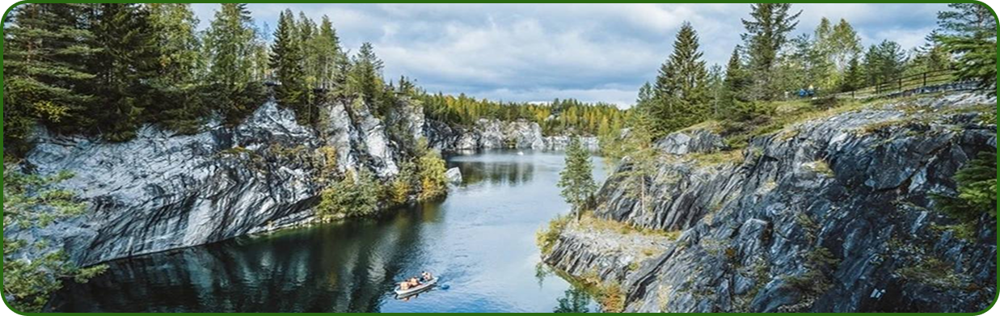
Добро пожаловать на ваш главный гид по Республике Карелия! Наш
сайт для путешественников, которые мечтают открыть для себя
всю многогранную красоту этого северного края. Карелия — это
не просто точка на карте. Это чувство. Шум сосен на скалистом
берегу, отражение неба в бесконечной глади озера, тишина
древних храмов и звонкая мощь водопадов.
Мы создали этот сайт, чтобы стать вашим проводником в этом
удивительном мире. Наша миссия — не просто рассказать, а
вдохновить. Вдохновить на дорогу, ведущую к новым открытиям,
на встречу с суровой и прекрасной природой Севера, на
путешествие, которое останется с вами навсегда. Найдите свой
идеальный маршрут будь то паломничество на Валаам, восторг от
мраморного каньона в Рускеале или уединение в диких лесах
Паанаярви.
Узнайте Карелию с разных сторон: ее духовное наследие, древнюю
историю, запечатленную в петроглифах и богатство активных
развлечений.
Мы верим, что у каждого должна быть своя Карелия. Давайте
найдем вашу!
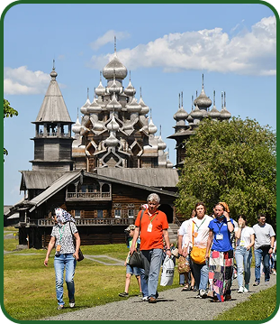
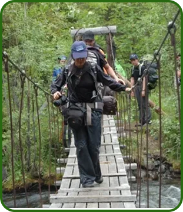
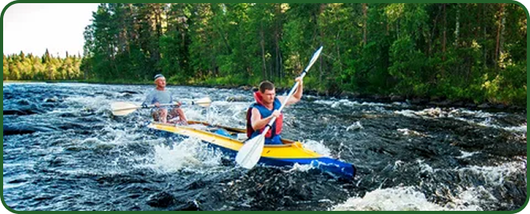

Главная природная достопримечательность, бывший мраморный карьер. Голубые озера в обрамлении белых мраморных скал.
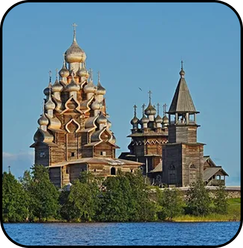
Музей-заповедник под открытым небом. Архитектурный ансамбль с всемирно известной 22-главой Церковью Преображения Господня, построенной без единого гвоздя.
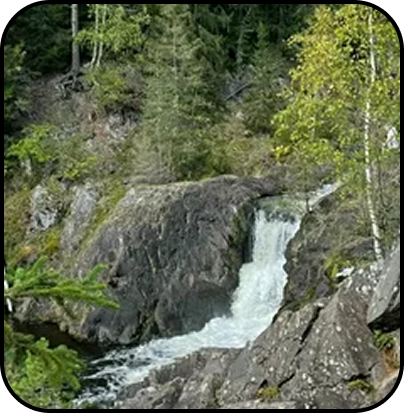
Второй по величине равнинный водопад в Европе. Мощный поток воды, низвергающийся с гранитных ступеней.
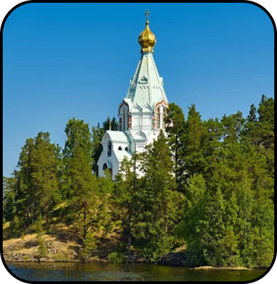
Действующий Спасо-Преображенский монастырь на скалистых островах в Ладожском озере. Потрясающая природа и монументальные храмы
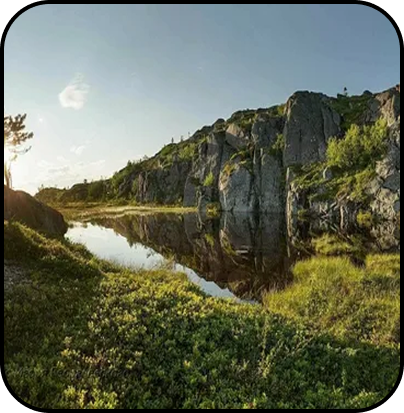
Заповедная территория у границы с Финляндией. Нетронутая тайга, чистейшие озера и одна из самых высоких вершин Карелии — гора Нуорунен.
Один из самых высоких водопадов Карелии, окруженный живописным лесом. Дорога к нему — это уже приключение.
Карелия предлагает широкий выбор размещения для любого бюджета и запроса: от уютных гостевых домов в глуши до современных спа-отелей с видом на озеро. Мы собрали подборку проверенных и популярных мест для вашего комфортного отдыха.
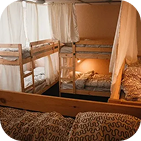
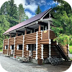
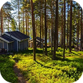
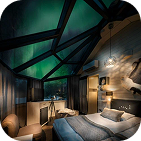
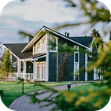
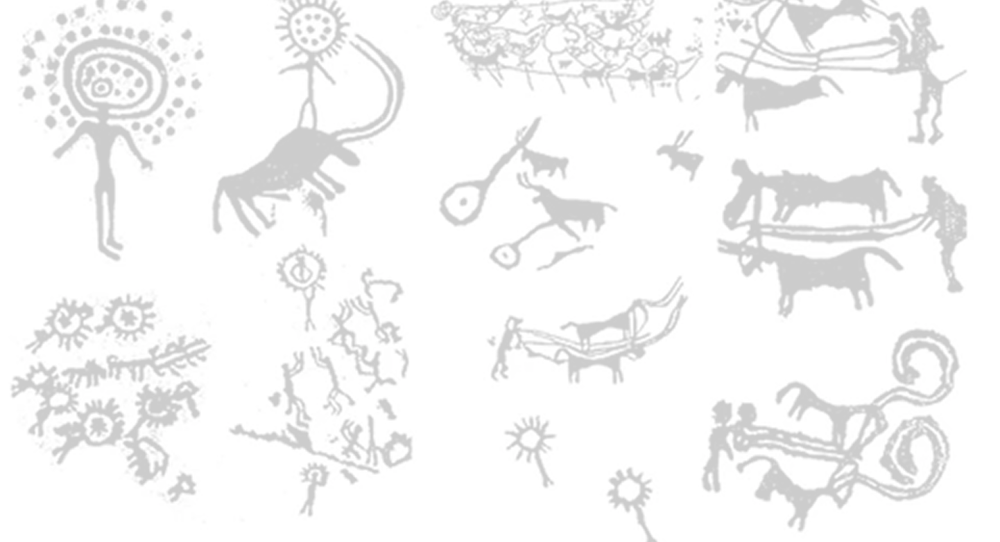
Оставляйте свои предложения нам о интересных местах Республики Карелия, обязательно рассмотрим каждый!